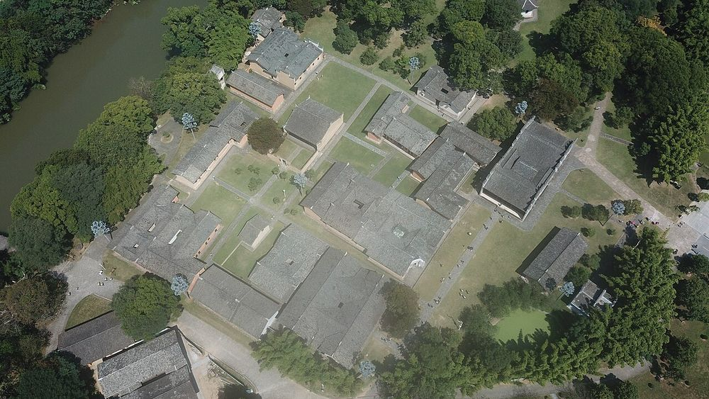

提示：点击地图上的城市圆点，可直接查看该地的历史影像
途经城市 · 历史影像
随演示自动切换，可点击缩略图浏览
图片均取自 Wikimedia Commons 的公有领域（PD）或知识共享（CC0 / CC BY / CC BY-SA）授权作品，
仅用于教学演示，点击大图可查看原图。图片来源与作者已在图片右上角标注。
《七律·长征》
创作时间：1935年10月 | 作者：毛泽东
红军不怕远征难，
万水千山只等闲。
五岭逶迤腾细浪，
乌蒙磅礴走泥丸。
金沙水拍云崖暖，
大渡桥横铁索寒。
更喜岷山千里雪，
三军过后尽开颜。
万水千山只等闲。
五岭逶迤腾细浪，
乌蒙磅礴走泥丸。
金沙水拍云崖暖，
大渡桥横铁索寒。
更喜岷山千里雪，
三军过后尽开颜。
注：这首诗作于1935年，是毛主席在长征途中创作的一首气势磅礴的七律诗。诗中描绘了红军战士不畏艰险、勇往直前的革命精神，展现了长征途中跨越万水千山的壮丽场景。诗中提到的五岭、乌蒙山、金沙江、大渡河、岷山等都是红军长征途中经过的重要地理位置，每一处都凝聚着红军将士的英勇事迹。
25000
里程（公里）
相当于绕地球赤道两圈的距离
368
天数
历时一年零三天，跨越1934-1936年
18
山脉
包括峨眉山、岷山、夹金山、六盘山等
24
大河
跨越长江、大渡河、金沙江等重要水系
重要事件
1934年10月
从江西瑞金出发
中央红军主力8.6万人，携带大量武器弹药，从中央苏区出发，开始战略转移。于都河边，数万红军战士和群众告别，场面震撼人心。
1934年12月
突破湘江
在湘江战役中，红军面对国民党军队的重重包围，以巨大牺牲突破封锁。这是长征途中最为惨烈的战役之一，红军主力减至3万余人。
1935年1月
遵义会议
在贵州遵义召开的政治局扩大会议，确立了毛泽东在党中央和红军的领导地位。这次会议是中国共产党历史上一个生死攸关的转折点。
1935年3月
四渡赤水
红军运用灵活机动的战术，四次渡过赤水河，巧妙摆脱敌人追击。这一战役充分展现了红军指挥员的军事指挥才能和战士们的英勇顽强。
1935年5月
强渡大渡河、飞夺泸定桥
面对湍急的大渡河，红军勇士们冒着枪林弹雨，仅用17名勇士就夺取了泸定桥。这座铁索桥成为红军长征途中最具传奇色彩的战斗象征。
1935年6月
翻越夹金山
红军翻越海拔4000多米的夹金山，战士们在冰天雪地中艰难前行。许多战士衣衫单薄，赤脚踩雪，展现了红军将士百折不挠的革命意志。
1935年9月
翻越六盘山
红军翻越六盘山时，毛泽东写下了著名的词作《清平乐·六盘山》："天高云淡，望断南飞雁。不到长城非好汉，屈指行程二万。"
1935年10月
到达陕北延安
历经368天，翻越18座大山，跨过24条大河，红军终于胜利到达陕北革命根据地。这次伟大的战略转移，为中国革命事业的发展开辟了新的局面。